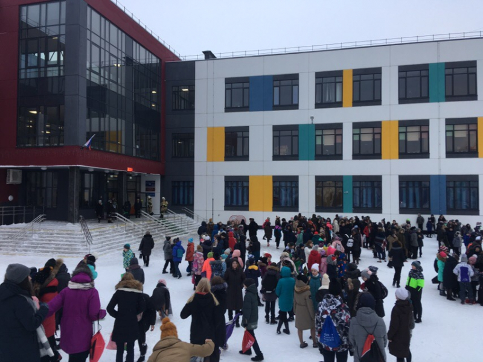

Детей эвакуируют из школ Ижевска из-за сообщений о минировании
Сообщение о том, что неизвестные направляют в школы Ижевска электронные письма о заведомо ложном минировании, появилось в телеграм-канале Темная Удмуртия.
Как рассказала корреспонденту «Udm-Info» одна из учителей ижевской школы №24, на адрес школы пришло электронное письмо с сообщением о том, что школа заминирована. Всех детей и учителей эвакуировали из здания за 5 минут и распустили по домам.

Фото: Юрий Парахин
В Ижевске в микрорайоне Юровские дачи и по улице Трудовая пчела скоро появится уличное освещение
Ижевск. Удмуртия. В Ижевске в микрорайоне Юровские дачи и по улице Трудовая пчела завершены работы по установке новых светильников. Об этом сообщает пресс-служба города.
После обращения местных жителей к главе Ижевска Олегу Бекмеметьеву с просьбой оборудования уличного освещения, в декабре 2020 года в микрорайоне Юровские дачи начались работы. Установили источник электроснабжения, линии освещения, 6 светильников и выполнили монтаж 178 метров провода воздушных линий.
Теперь предстоит закрепить новое городское имущество за муниципальным предприятием «Горсвет» и включить его в контракт на обеспечение наружного освещения Ижевска. После завершения этих процедур в середине мая на улице Трудовая пчела и в микрорайоне Юровские дачи появится освещение.

Фото: Крамарь Данил